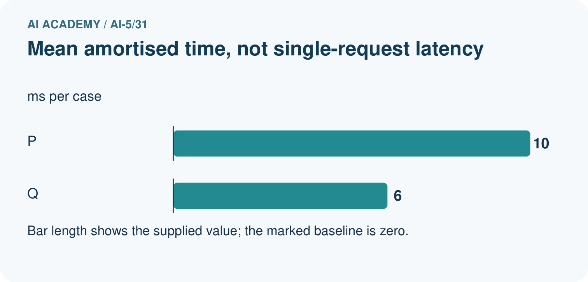
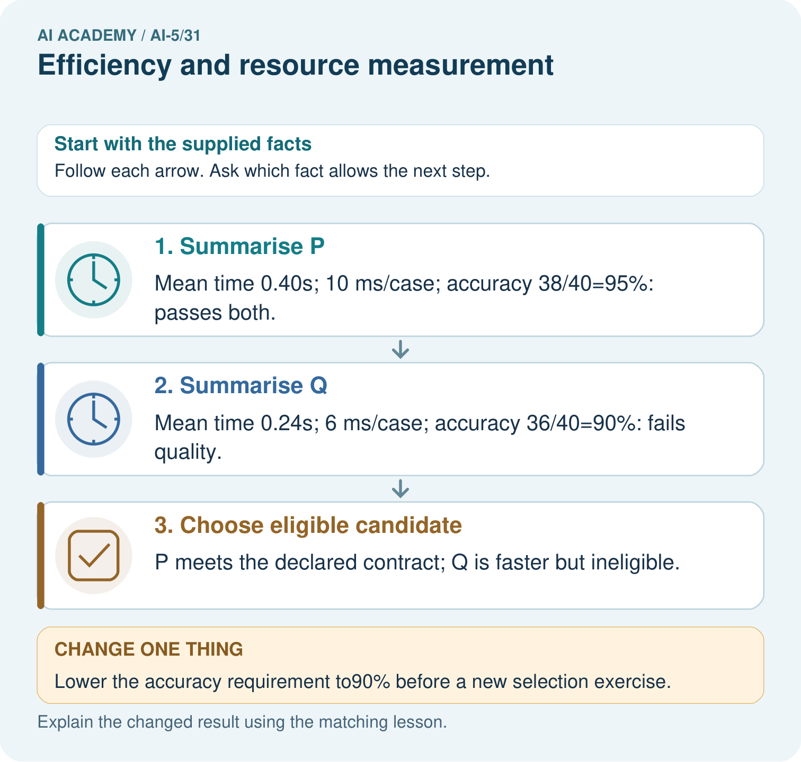
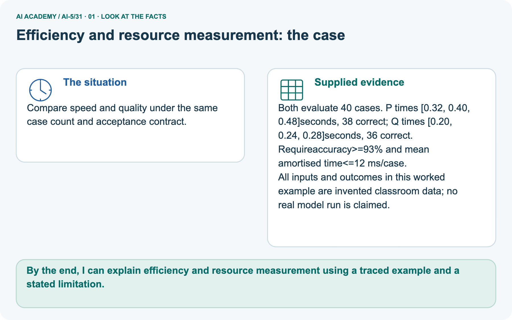
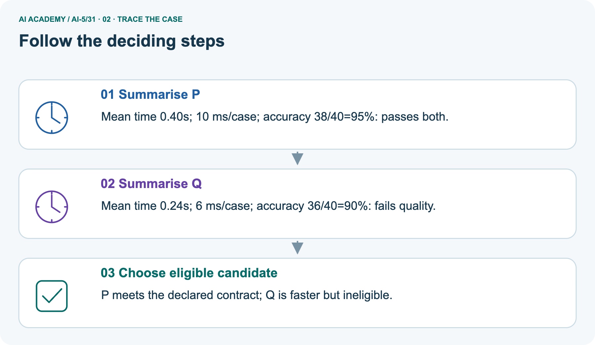
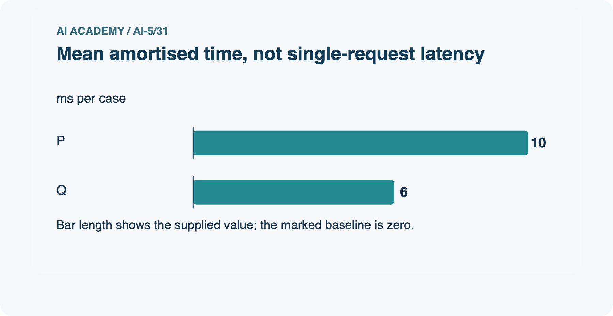
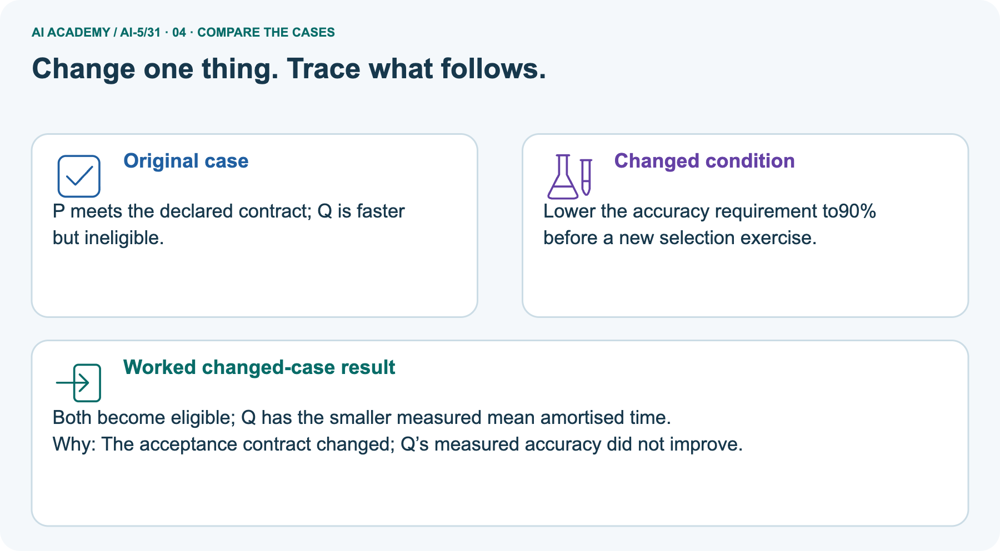
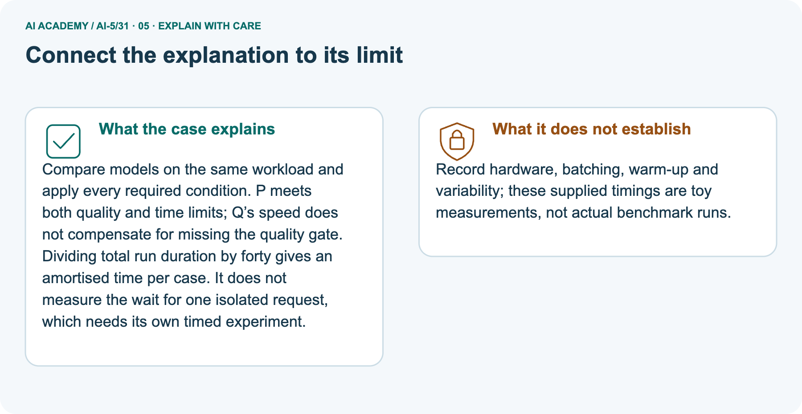

AI Academy · Level 5 · Grade 10 · Week 31 · Workbook
Efficiency and resource measurement
Learn to understand, design, build, test and explain AI systems responsibly.
Project: Image-pattern Network Investigation
THE CONNECTED WEEK
One complete model comparison record.
Preserve raw timings, quality counts, resource scope and honest limits.
Keep one habit: Recall → W1–W3/W5 → independent comparison → project protocol → delayed return.
Main lesson · Section 1
Recall · Retrieve before notes
Keep this task’s inputs,rule and response together.
Complete task and evidence
Try the recall before opening notes. Then use a different colour or a labelled second line to correct your explanation.
Without opening the old lesson, explain one key idea from Dataset shift in neural models. Give an example and a mistake that the idea helps you avoid.
Without opening the old lesson, explain one key idea from Transfer learning. Give an example and a mistake that the idea helps you avoid.
Without opening the old lesson, explain one key idea from Sequence representations. Give an example and a mistake that the idea helps you avoid.
Use this reference for the original W1–W3 and W5 exercises. The separately named independent case supplies its own changed facts; use those facts for that attempt before feedback.
A neural model can be faster yet fail the task’s accuracy requirement. Training cost and prediction cost are different: training updates parameters, while inference uses the fitted model.
Compare quality and resources together under a declared test, rather than calling a model efficient from one small number.
Use these invented classroom timings for models A and B. Each timed pass processes the same 100 preprocessed examples sequentially, one at a time, on the same device and precision.
Start before the first prediction and stop after the final prediction completes. Loading and preprocessing are excluded for both. One untimed warm-up pass precedes three timed passes; the warm-up work must still be reported.
The validation cases are the same for both models and are scored once each; repeating timing passes does not create 300 independent quality examples. No actual benchmark was run to produce this table.
Dataset shift in neural models
Transfer learning
Sequence representations
Lesson reference for workbook practice
| Measurement | Model A | Model B |
|---|---|---|
| Pass 1 seconds | 2.0 | 1.2 |
| Pass 2 seconds | 2.2 | 1.1 |
| Pass 3 seconds | 1.8 | 1.3 |
| Correct on 100 validation cases | 92 | 90 |
Main lesson · Section 5
W1 · Explain the current example
Keep this task’s inputs,rule and response together.
Complete task and evidence
Main invented timings on the same 100 examples: A [2.0, 2.2, 1.8] seconds, 92 correct; B [1.2, 1.1, 1.3], 90 correct. Same device, precision and sequential batch-one boundary; loading/preprocessing excluded. One untimed warm-up then three timed passes. Medians 2.0 and 1.2 seconds; amortised times 20 and 12 ms; median-pass throughput 50 and about 83.33 examples/second.
Time reduction 40%; throughput increase about 66.67%. Required at least 91 correct and at most 25 ms: only A qualifies. Alternative requirement at least 90 correct set in advance: both qualify and B wins the lower-time rule. Three timing passes execute 300 predictions plus 100 warm-up predictions per model, but quality still uses 100 distinct cases.
Dense 4→3→2: weights 12+6 = 18, biases 3+2 = 5, total 23, raw payload 92 bytes at four bytes each. This is not file size, peak memory, energy or carbon. Separate picture uses means over 40 cases: P .32/.40/.48 seconds, 38 correct; Q .20/.24/.28, 36 correct. Mean times .40/.24, amortised 10/6 ms, accuracy 95%/90%. At 93% and 12 ms only P qualifies; at 90% both qualify.
No actual benchmark, latency distribution, energy or future accuracy is supplied.
For A and B, calculate median pass time, amortised milliseconds per example and median-pass throughput. State the measured boundary and one latency claim these numbers cannot support.
Main lesson · Section 6
W2 · Trace the calculation
Keep this task’s inputs,rule and response together.
Complete task and evidence
Main invented timings on the same 100 examples: A [2.0, 2.2, 1.8] seconds, 92 correct; B [1.2, 1.1, 1.3], 90 correct. Same device, precision and sequential batch-one boundary; loading/preprocessing excluded. One untimed warm-up then three timed passes. Medians 2.0 and 1.2 seconds; amortised times 20 and 12 ms; median-pass throughput 50 and about 83.33 examples/second.
Time reduction 40%; throughput increase about 66.67%. Required at least 91 correct and at most 25 ms: only A qualifies. Alternative requirement at least 90 correct set in advance: both qualify and B wins the lower-time rule. Three timing passes execute 300 predictions plus 100 warm-up predictions per model, but quality still uses 100 distinct cases.
Dense 4→3→2: weights 12+6 = 18, biases 3+2 = 5, total 23, raw payload 92 bytes at four bytes each. This is not file size, peak memory, energy or carbon. Separate picture uses means over 40 cases: P .32/.40/.48 seconds, 38 correct; Q .20/.24/.28, 36 correct. Mean times .40/.24, amortised 10/6 ms, accuracy 95%/90%. At 93% and 12 ms only P qualifies; at 90% both qualify.
No actual benchmark, latency distribution, energy or future accuracy is supplied.
With at least 91 correct out of 100 and at most 25 ms amortised time required, which model qualifies? Calculate B’s time reduction relative to A and explain why the percentage throughput increase differs.
Main lesson · Section 7
W3 · Repair a misconception
Keep this task’s inputs,rule and response together.
Complete task and evidence
Main invented timings on the same 100 examples: A [2.0, 2.2, 1.8] seconds, 92 correct; B [1.2, 1.1, 1.3], 90 correct. Same device, precision and sequential batch-one boundary; loading/preprocessing excluded. One untimed warm-up then three timed passes. Medians 2.0 and 1.2 seconds; amortised times 20 and 12 ms; median-pass throughput 50 and about 83.33 examples/second.
Time reduction 40%; throughput increase about 66.67%. Required at least 91 correct and at most 25 ms: only A qualifies. Alternative requirement at least 90 correct set in advance: both qualify and B wins the lower-time rule. Three timing passes execute 300 predictions plus 100 warm-up predictions per model, but quality still uses 100 distinct cases.
Dense 4→3→2: weights 12+6 = 18, biases 3+2 = 5, total 23, raw payload 92 bytes at four bytes each. This is not file size, peak memory, energy or carbon. Separate picture uses means over 40 cases: P .32/.40/.48 seconds, 38 correct; Q .20/.24/.28, 36 correct. Mean times .40/.24, amortised 10/6 ms, accuracy 95%/90%. At 93% and 12 ms only P qualifies; at 90% both qualify.
No actual benchmark, latency distribution, energy or future accuracy is supplied.
Count weights, biases and total parameters in the 4 to 3 to 2 network. Calculate raw parameter bytes at four bytes each. Explain why this cannot be reported as peak training memory or an energy measurement.
Main lesson · Section 9
W5 · Explain the limitation
Keep this task’s inputs,rule and response together.
Complete task and evidence
Main invented timings on the same 100 examples: A [2.0, 2.2, 1.8] seconds, 92 correct; B [1.2, 1.1, 1.3], 90 correct. Same device, precision and sequential batch-one boundary; loading/preprocessing excluded. One untimed warm-up then three timed passes. Medians 2.0 and 1.2 seconds; amortised times 20 and 12 ms; median-pass throughput 50 and about 83.33 examples/second.
Time reduction 40%; throughput increase about 66.67%. Required at least 91 correct and at most 25 ms: only A qualifies. Alternative requirement at least 90 correct set in advance: both qualify and B wins the lower-time rule. Three timing passes execute 300 predictions plus 100 warm-up predictions per model, but quality still uses 100 distinct cases.
Dense 4→3→2: weights 12+6 = 18, biases 3+2 = 5, total 23, raw payload 92 bytes at four bytes each. This is not file size, peak memory, energy or carbon. Separate picture uses means over 40 cases: P .32/.40/.48 seconds, 38 correct; Q .20/.24/.28, 36 correct. Mean times .40/.24, amortised 10/6 ms, accuracy 95%/90%. At 93% and 12 ms only P qualifies; at 90% both qualify.
No actual benchmark, latency distribution, energy or future accuracy is supplied.
A runs on one device with batch size 1; B runs on another with batch size 32. Only B’s fastest trial and the winning training run are reported. Explain how to compare and report the results fairly.
Main lesson · Section 4
Try alone · Selected transfer
Keep this task’s inputs,rule and response together.
Complete task and evidence
For 50 shared validation cases, P has times 0.6, 0.5, 0.4 seconds and 47 correct; Q has 0.3, 0.4, 0.5 seconds and 45 correct. Require at least 92 percent accuracy and at most 12 ms amortised time.
Give median times, amortised times, throughput, accuracy and eligible models. A separate dense network has dimensions 3 to 2 to 1 with one bias per output: find its parameter count and raw bytes at four bytes each.
Attempt this case before feedback. Record any help. Earlier examples below are further practice; a case already practised with feedback cannot establish fresh transfer.
Independent case: Evaluate a new case independently
Main lesson · Section 10
Project · Keep the mathematical evidence
Keep this task’s inputs,rule and response together.
Complete task and evidence
Add a labelled efficiency and resource measurement evidence sheet to Image-pattern Network Investigation. Show how you can calculate throughput and amortised time per example from repeated timings.
Use the supplied fictional case and keep its inputs, intermediate steps, calculation or prediction, and limitation. Connect this record to last week’s record; a matching answer without a trace is insufficient.
Main lesson · Section 11
Feedback · Repair and return
Keep this task’s inputs,rule and response together.
Complete task and evidence
Revisit this idea with your teacher after a delay. Familiarity is different from explaining and using it on a changed case.
| Evidence | My record |
|---|---|
| Worked alone / hint / model | |
| First step I repaired and why | |
| New case checked later; date and result | |
| What I can now explain without notes | |
| One remaining question |
Reference bank and extra practice
Choose the reference that helps your next step.
Reference · Supported W2 record
Reference · Section 2
Reference · Supported W2 record
Keep this task’s inputs,rule and response together.
Complete task and evidence
Use W2: Compare under requirements for Efficiency and resource measurement. Record the answer once; the lesson and workbook refer to the same attempt.
| Given inputs | Procedure I chose | Middle steps | Result and check |
|---|---|---|---|
Extra practice · Individual reasoning check
Reference · Section 3
Extra practice · Individual reasoning check
Keep this task’s inputs,rule and response together.
Complete task and evidence
Use the worked case for Efficiency and resource measurement. Proposed explanation: “Fewer parameters always means faster”. Decide whether this explanation is supported.
Point to the step or supplied fact that decides; explain your repair if needed.
Reference · Earlier W4 response copy
Reference · Section 8
Reference · Earlier W4 response copy
Keep this task’s inputs,rule and response together.
Complete task and evidence
For 50 shared validation cases, P has times 0.6, 0.5, 0.4 seconds and 47 correct; Q has 0.3, 0.4, 0.5 seconds and 45 correct. Require at least 92 percent accuracy and at most 12 ms amortised time.
Give median times, amortised times, throughput, accuracy and eligible models. A separate dense network has dimensions 3 to 2 to 1 with one bias per output: find its parameter count and raw bytes at four bytes each.
Extra practice · Pictured case
Reference · Section 12
Extra practice · Pictured case
Keep this task’s inputs,rule and response together.
Complete task and evidence
Compare speed and quality under the same case count and acceptance contract.
Both evaluate 40 cases. P times [0.32, 0.40, 0.48]seconds, 38 correct; Q times [0.20, 0.24, 0.28]seconds, 36 correct. Requireaccuracy>=93% and mean amortised time<=12 ms/case.
All inputs and outcomes in this worked example are invented classroom data; no real model run is claimed.
Why is 10 ms/case not necessarily a single-request latency? Point to the relevant step in the picture, then write the changed result and the rule or evidence that supports it.
Support used: alone / hint / worked example. This record is practice evidence.
Project connection: For your Image-pattern Network Investigation, save the input, procedure, observed result and limitation of this check.
Label this worked example as practice; use a different, previously unreviewed case when checking independent understanding.






Reference · Project milestone
Reference · Section 13
Reference · Project milestone
Keep this task’s inputs,rule and response together.
Complete task and evidence
Project: Image-pattern Network Investigation
Current milestone: Present and defend. Demonstrate the system, explain one failure and justify the next improvement with evidence.
For your Image-pattern Network Investigation, save the input, procedure, observed result and limitation of this check.
Label this worked example as practice; use a different, previously unreviewed case when checking independent understanding.
| Evidence to keep | My record |
|---|---|
| This week’s input and deciding step | |
| Prediction and actual result (or labelled paper trace) | |
| One change since the previous checkpoint and why | |
| One error or limit and the next test |
Extra practice · Predict,check and repair
Reference · Section 14
Extra practice · Predict,check and repair
Keep supported feedback separate from the independent case.
First supported question and optional hint
Compare speed and quality under the same case count and acceptance contract.
Which labelled step matches this detail? P meets the declared contract; Q is faster but ineligible.
1. Summarise P
2. Summarise Q
3. Choose eligible candidate
Hint if needed: Read the steps in the pictorial case. Match the supplied detail to the stage that performs or records it.
Practice 1: explain the deciding evidence
Check after the first attempt
After your attempt, compare with the supported explanation: Choose eligible candidate P meets the declared contract; Q is faster but ineligible. Compare models on the same workload and apply every required condition.
P meets both quality and time limits; Q’s speed does not compensate for missing the quality gate. Dividing total run duration by forty gives an amortised time per case.
It does not measure the wait for one isolated request, which needs its own timed experiment.
Changed-case question and optional hint
Changed-case practice: Lower the accuracy requirement to90% before a new selection exercise. Which conclusion is supported by the supplied facts?
1. Both become eligible; Q has the smaller measured mean amortised time.
2. We can decide the result without examining the changed input or the procedure.
3. This one example guarantees correct results for every future input.
Hint if needed: Use the changed condition and the deciding step in the pictorial trace. The answer must say what follows from those facts.
Practice 2: explain the deciding evidence
Check after the changed attempt
After your attempt, compare with the supported explanation: Both become eligible; Q has the smaller measured mean amortised time. The acceptance contract changed; Q’s measured accuracy did not improve.
Repair and retain the record
Review Dataset shift in neural models (ai-5/30). Goal: Explain how a changed input mix can change overall accuracy. Short practice: Did the supplied model’s dim-light accuracy deteriorate?
Point to the relevant step in the picture, then write the changed result and the rule or evidence that supports it.. Return to this week and explain what you changed.
Review Transfer learning (ai-5/28). Goal: Trace a reused feature extractor and a newly fitted output head. Short practice: Which part was trained for the new task?
Point to the relevant step in the picture, then write the changed result and the rule or evidence that supports it.. Return to this week and explain what you changed.
Review Sequence representations (ai-5/25). Goal: Encode an ordered sequence with an explicit vocabulary. Short practice: Which record lets the program distinguish the first and last zeros?
Point to the relevant step in the picture, then write the changed result and the rule or evidence that supports it.. Return to this week and explain what you changed.
The browser lab lets you edit the supported Python examples already included in this lesson. Predict first, run, inspect the actual output or error, change one input, then run again.
Keep code, predictions, actual results and a reasoned revision together. On paper, label your result as a trace rather than an execution.
Use Download completed work in the hosted lesson to export your answers, reflections, practice feedback and code-run evidence. Open the HTML copy to read or print it.
Drafts stay in this browser when storage is available; clear drafts on a shared device.
Earlier wording, alternatives and picture transcripts
Use this supported practice once, in the browser or on paper. Keep the reserved independent assessment for a separate first attempt before teacher feedback.
Repair a missing building block
Predict, run and debug
Keep your completed work
Reference · Six-picture response sheets
Reference · Section 15
Reference · Six-picture response sheets
Choose the picture that helps explain the current step.
01. Efficiency and resource measurement: the case



Compare speed and quality under the same case count and acceptance contract. Supplied facts: Both evaluate 40 cases. P times [0.32, 0.40, 0.48]seconds, 38 correct; Q times [0.20, 0.24, 0.28]seconds, 36 correct.
Requireaccuracy>=93% and mean amortised time<=12 ms/case. All inputs and outcomes in this worked example are invented classroom data; no real model run is claimed.
Point to the given fact that matters most. Explain why it matters.
02. Follow the deciding steps



Summarise P: Mean time 0.40s; 10 ms/case; accuracy 38/40=95%: passes both. → Summarise Q: Mean time 0.24s; 6 ms/case; accuracy 36/40=90%: fails quality. → Choose eligible candidate: P meets the declared contract; Q is faster but ineligible.
Point to each numbered stage and explain which recorded input it uses.
03. Mean amortised time, not single-request latency



Mean amortised time, not single-request latency. Units: ms per case. P: 10. Q: 6.
Read the labels and values. Explain the relationship the model shows.
04. Change one thing. Trace what follows.



Original case: P meets the declared contract; Q is faster but ineligible. Changed condition: Lower the accuracy requirement to90% before a new selection exercise.
Expected result: Both become eligible; Q has the smaller measured mean amortised time. Reason: The acceptance contract changed; Q’s measured accuracy did not improve.
Predict before checking the worked changed-case result. Name what changed and what the supplied facts allow you to conclude.
05. Connect the explanation to its limit



Compare models on the same workload and apply every required condition. P meets both quality and time limits; Q’s speed does not compensate for missing the quality gate.
Dividing total run duration by forty gives an amortised time per case. It does not measure the wait for one isolated request, which needs its own timed experiment.
Limit: Record hardware, batching, warm-up and variability; these supplied timings are toy measurements, not actual benchmark runs.
Explain the case, then point to a limit on the claim.
06. Make the idea visible in your project


For your Image-pattern Network Investigation, save the input, procedure, observed result and limitation of this check.
Label this worked example as practice; use a different, previously unreviewed case when checking independent understanding. Draw your input, deciding step, result and limit.
Supported question: Why is 10 ms/case not necessarily a single-request latency? Point to the relevant step in the picture, then write the changed result and the rule or evidence that supports it.
Draw your project trace and justify the deciding step using evidence.